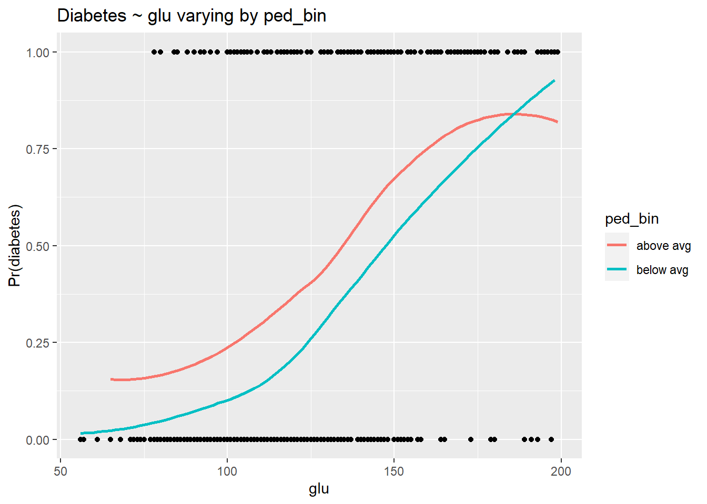
La Estadística: Una ciencia detras de los datos
Estadística
Data Science
En el vasto universo del conocimiento, pocas disciplinas tienen la capacidad de influir en nuestras vidas de manera tan profunda y diversa como la estadística; este campo, a menudo subestimado, es la piedra angular para construir una comprensión precisa y matizada del mundo.
La estadística no se limita a fórmulas y cálculos aislados; es una ciencia poderosa para dar sentido a la información que nos rodea, pues nos permite analizar la incertidumbre; gracias a ella, podemos transformar datos en conocimiento aplicable a diversos campos, desde la medicina hasta la economía y la tecnología, asegurando decisiones fundamentadas en evidencia y no en simples conjeturas.
Para quienes aún no han tenido la oportunidad de explorar el mundo de la estadística, la invitación es clara: háganlo con curiosidad y pasión. Esta disciplina desafía nuestras percepciones, enriquece nuestro conocimiento y fortalece nuestra capacidad para tomar decisiones; no es casualidad que algunos la llamen ‘la profesión más sexy del siglo XXI’—y no solo porque suena bien, sino porque su impacto es real y transformador.
Cómo la Estadística Transforma Sectores
La estadística está presente en casi todos los ámbitos, desde la medicina hasta la economía, la educación y el deporte; su capacidad para analizar datos y extraer información valiosa la convierte en un pilar clave para la toma de decisiones y la optimización de procesos. A continuación, se presenta una breve descripción de la estadística en acción en distintos sectores:
Salud y Medicina
En salud y medicina, la estadística juega un papel fundamental al evaluar la eficacia de tratamientos a través de ensayos clínicos (p. ej., pruebas t para comparar grupos de pacientes) y modelos como la regresión de Cox para analizar la supervivencia, por otro lado en la gestión de brotes, como el ébola, se utilizan modelos SIR para predecir la propagación y asignar recursos; la predicción de rehospitalizaciones, mediante regresión logística, permite identificar pacientes con alto riesgo, optimizando las intervenciones tempranas y reduciendo costos, además, estudios como el de Framingham usan análisis multivariable para identificar factores de riesgo de enfermedades crónicas, mientras que la simulación de Monte Carlo ayuda en la gestión hospitalaria, prediciendo la demanda de recursos como camas y personal. Es importante mencionar que esto solo es la punta del iceberg, pues existen innumerables aplicaciones en este campo.
Economía y Finanzas
En economía y finanzas, la estadística es esencial para el análisis de mercados, la gestión de riesgos y la toma de decisiones, pues modelos de series temporales, como ARIMA y GARCH, se usan para predecir precios de activos y volatilidad en el mercado bursátil. En la evaluación de riesgos crediticios, la regresión logística y los árboles de decisión permiten identificar la probabilidad de incumplimiento de pagos, además, los métodos de análisis de regresión y correlación se aplican para estudiar la relación entre variables económicas, como el impacto de las tasas de interés en la inflación. En inversiones, la simulación de Monte Carlo ayuda a modelar escenarios de rendimiento de portafolios, optimizando estrategias financieras.
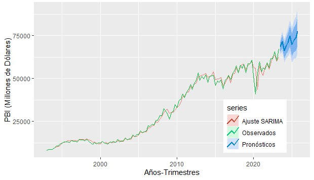
Marketing y Publicidad
En marketing y publicidad, la estadística permite comprender el comportamiento del consumidor y optimizar estrategias de mercado. Mediante análisis de regresión y modelos de atribución, se identifica el impacto de diferentes canales publicitarios en las ventas, resolviendo el problema de asignar eficientemente los presupuestos de marketing, por otro lado los análisis de clusters y segmentación de mercado permiten agrupar consumidores con características similares, lo que facilita la creación de campañas personalizadas. Las pruebas A/B se utilizan para evaluar la efectividad de cambios en anuncios o páginas web, ayudando a maximizar las conversiones. Además, el análisis predictivo, como el modelo de propensión a la compra, estima la probabilidad de que un cliente realice una compra futura, permitiendo una toma de decisiones más informada.
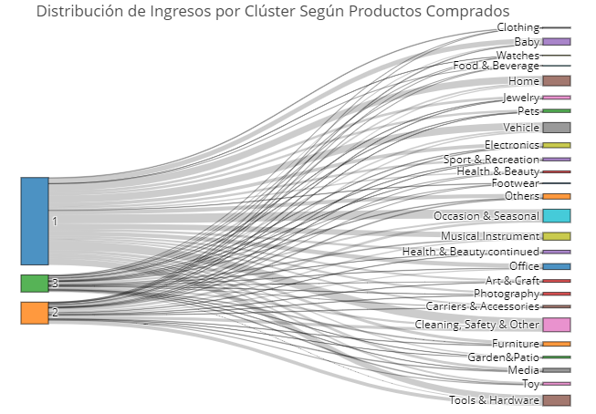
Medio Ambiente
En el campo del medio ambiente, la estadística es esencial para abordar problemas complejos relacionados con la sostenibilidad y la gestión de recursos. Los modelos de regresión espacial permiten analizar la distribución de fenómenos ambientales, como la contaminación del aire o la deforestación, en función de factores geográficos. Los modelos de series temporales, como los modelos ARIMA y SARIMA, se utilizan para prever patrones en datos ambientales, como las variaciones estacionales en la calidad del agua o las temperaturas globales. En la gestión de recursos naturales, los modelos de simulación de Monte Carlo ayudan a evaluar la incertidumbre en los pronósticos de disponibilidad de recursos y la gestión de riesgos asociados con eventos extremos, como sequías o inundaciones. Además, el análisis de componentes principales (PCA) se emplea para reducir la dimensionalidad de grandes conjuntos de datos ambientales, identificando las variables más influyentes y facilitando la interpretación de los efectos del cambio climático, lo que facilita diseñar políticas ambientales efectivas y para la investigación en sostenibilidad.
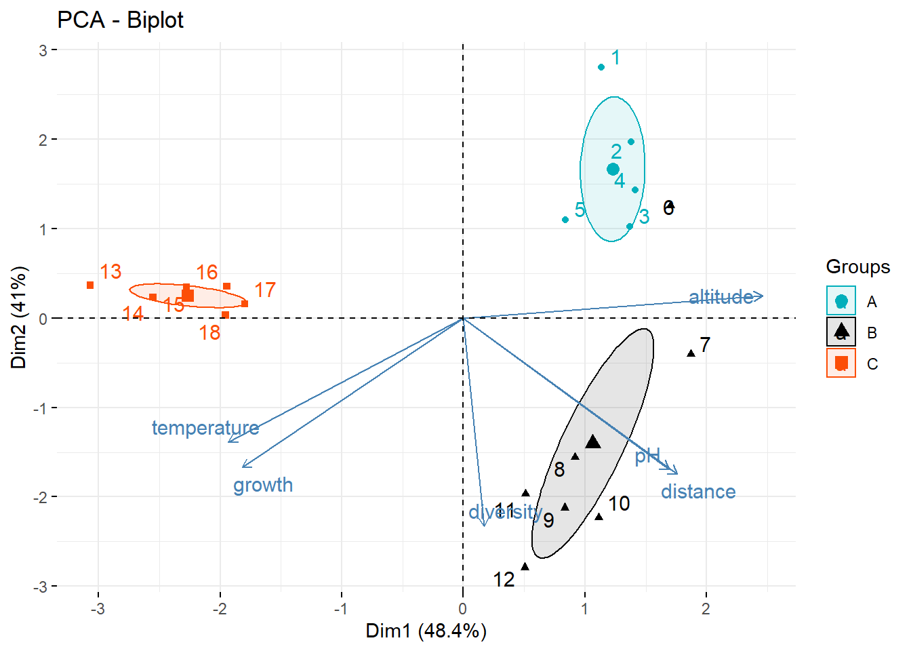
Agricultura
En agricultura, la estadística es clave para mejorar la producción y sostenibilidad de los cultivos. Los modelos de regresión y análisis multivariable se utilizan para estudiar el impacto de factores como el tipo de suelo, las condiciones climáticas y las prácticas de cultivo en el rendimiento de los cultivos. Las técnicas de diseño experimental, como los diseños de bloques aleatorios y los ensayos factoriales, permiten optimizar las prácticas agrícolas al evaluar la eficacia de diferentes tratamientos o técnicas en parcelas experimentales. Los modelos predictivos, como los modelos de series temporales y redes neuronales, se aplican para prever rendimientos futuros basándose en datos históricos y condiciones actuales, lo que ayuda a planificar mejor las cosechas y la gestión de recursos, además, el análisis de componentes principales (PCA) se usa para identificar los factores más relevantes que afectan la producción agrícola, facilitando la toma de decisiones sobre qué variables ajustar para mejorar la eficiencia. Estas técnicas avanzadas permiten a los agricultores y gestores agrícolas tomar decisiones basadas en datos precisos, mejorando la productividad y sostenibilidad de las prácticas agrícolas.
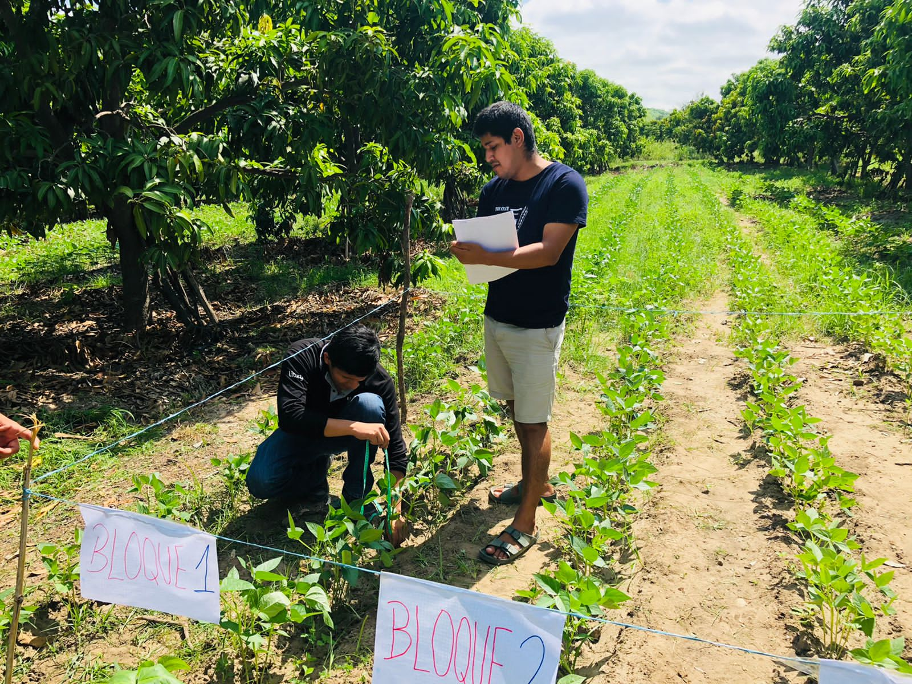
Política y Gobierno
En el ámbito de la política y el gobierno, la estadística desempeña un papel fundamental en la formulación y evaluación de políticas públicas. Los modelos de regresión lineal y logística se utilizan para analizar los efectos de políticas económicas y sociales sobre variables clave, como el crecimiento económico y la equidad social, por otro lado las encuestas y estudios de opinión aplican técnicas de muestreo y análisis estadístico para capturar la percepción pública sobre temas políticos, facilitando la toma de decisiones informadas. Los modelos econométricos y series temporales permiten prever los impactos de cambios en políticas fiscales y monetarias, ayudando a diseñar estrategias efectivas para el manejo de la economía. Además, el análisis espacial se usa para examinar la distribución geográfica de variables como el desempleo o la pobreza, identificando áreas que requieren intervención específica, por otro lado el análisis de redes proporciona información sobre las relaciones entre actores políticos y sociales, permitiendo comprender mejor las dinámicas de poder y colaboración. lo que permite a los responsables de políticas y funcionarios gubernamentales tomar decisiones basadas en datos precisos, optimizando la eficacia de las políticas públicas y mejorando la gestión gubernamental.
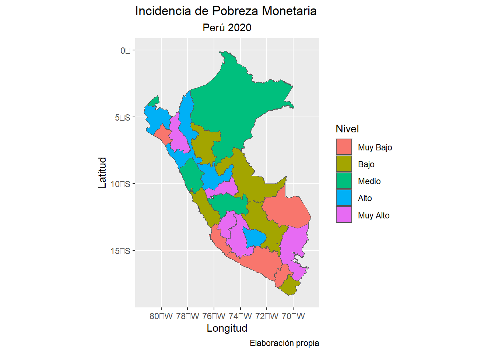
Seguridad y Criminología
En el campo de la seguridad y la terminología, la estadística es crucial para entender y prevenir la criminalidad, así como para mejorar la eficacia de las estrategias de seguridad pública. Los modelos de regresión y análisis de series temporales se emplean para identificar patrones y tendencias en la delincuencia, como el aumento o disminución de crímenes en diferentes áreas y períodos. Modelos espaciales, como el análisis de patrones de delitos con funciones de densidad kernel, ayudan a mapear y visualizar la distribución geográfica de los crímenes, lo que permite a las fuerzas del orden identificar zonas de alta incidencia y asignar recursos de manera más efectiva. El análisis de redes sociales se utiliza para investigar y desmantelar estructuras criminales al examinar las conexiones entre individuos y grupos involucrados en actividades delictivas. Las técnicas de modelado predictivo, como el análisis de riesgo y los modelos de predicción de delitos, permiten anticipar la ocurrencia de crímenes y desarrollar estrategias preventivas basadas en datos históricos y variables socioeconómicas. Adicional a ello, el análisis de supervivencia y los modelos de eventos ayudan a estudiar la duración de comportamientos delictivos y la reincidencia de delincuentes, proporcionando información valiosa para el diseño de programas de rehabilitación y reintegración.
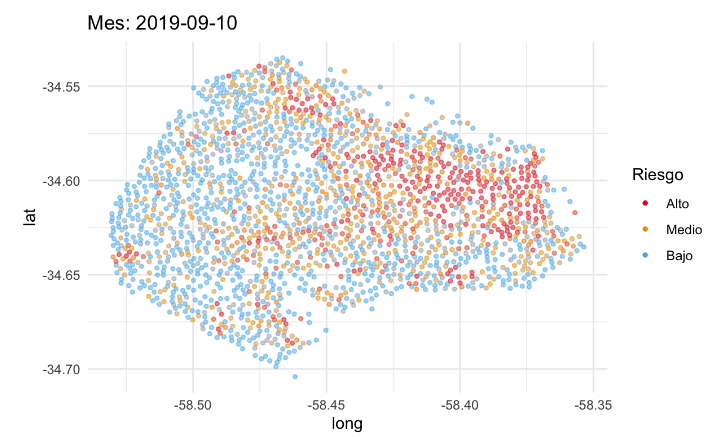
Energía y Recursos Naturales
En el sector de energía y recursos naturales, la estadística es esencial para optimizar la gestión y explotación de recursos. Los modelos de series temporales y modelos predictivos, como ARIMA y modelos de redes neuronales, se utilizan para prever la demanda y oferta de energía, así como para estimar la producción futura de recursos como el petróleo y el gas. Modelos de simulación de Monte Carlo ayudan a evaluar la incertidumbre en la producción y los precios, mientras que el análisis multivariante y modelos de regresión exploran las relaciones entre variables como las condiciones climáticas y la eficiencia energética: los modelos de optimización permiten gestionar la distribución y uso de recursos naturales, maximizando la eficiencia y minimizando costos. Además, el análisis espacial y modelos de simulación se aplican para evaluar el impacto ambiental de la explotación de recursos y planificar el desarrollo sostenible. Estas técnicas estadísticas avanzadas proporcionan herramientas poderosas para una toma de decisiones informada, mejorando la gestión de recursos y promoviendo prácticas sostenibles en el sector energético.
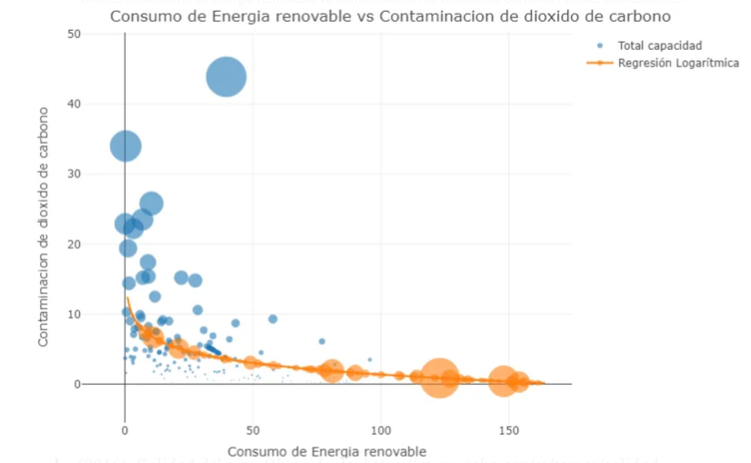
Psicología y Comportamiento Humano
En psicología y comportamiento humano, la estadística es crucial para analizar y comprender fenómenos complejos relacionados con la mente y el comportamiento. Modelos de regresión lineal y logística se utilizan para investigar la relación entre variables psicológicas, como el impacto de factores ambientales y biológicos en trastornos mentales. Las pruebas factoriales y análisis de conglomerados permiten identificar patrones en datos de encuestas y estudios de casos, facilitando la clasificación de diferentes tipos de trastornos y comportamientos. Modelos de ecuaciones estructurales se aplican para examinar las relaciones causales entre variables, como la influencia de la autoeficacia en el rendimiento académico; el análisis de series temporales se usa para estudiar la variabilidad en comportamientos a lo largo del tiempo, como en la monitorización de cambios en la ansiedad o la depresión. Además, el análisis de redes ayuda a entender las interacciones entre diferentes variables psicológicas y sociales, proporcionando una visión más holística del comportamiento humano.
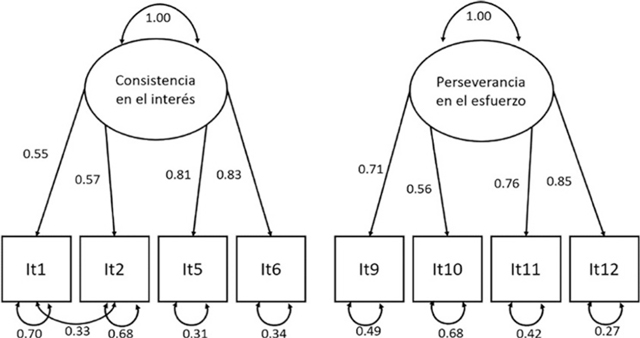
Demografía y Estudios Poblacionales
En demografía y estudios poblacionales, la estadística es fundamental para analizar y prever tendencias en la estructura y dinámica de las poblaciones. Modelos de proyección demográfica, como los modelos de cohortes y los modelos de crecimiento exponencial, se utilizan para estimar futuros cambios en la población basados en tasas de natalidad, mortalidad y migración; el análisis de series temporales ayuda a identificar patrones históricos y estacionales en los datos poblacionales, permitiendo una mejor planificación de recursos y políticas públicas. Modelos de regresión multivariada y análisis espacial examinan las relaciones entre variables demográficas y socioeconómicas, como el impacto de la educación en el crecimiento poblacional o las diferencias regionales en la tasa de natalidad. Además, el análisis de componentes principales (PCA) se aplica para reducir la dimensionalidad de grandes conjuntos de datos poblacionales, facilitando la identificación de factores clave que afectan las tendencias demográficas. Estas técnicas estadísticas avanzadas proporcionan una base sólida para la formulación de políticas y estrategias de desarrollo que responden a las necesidades cambiantes de las poblaciones.
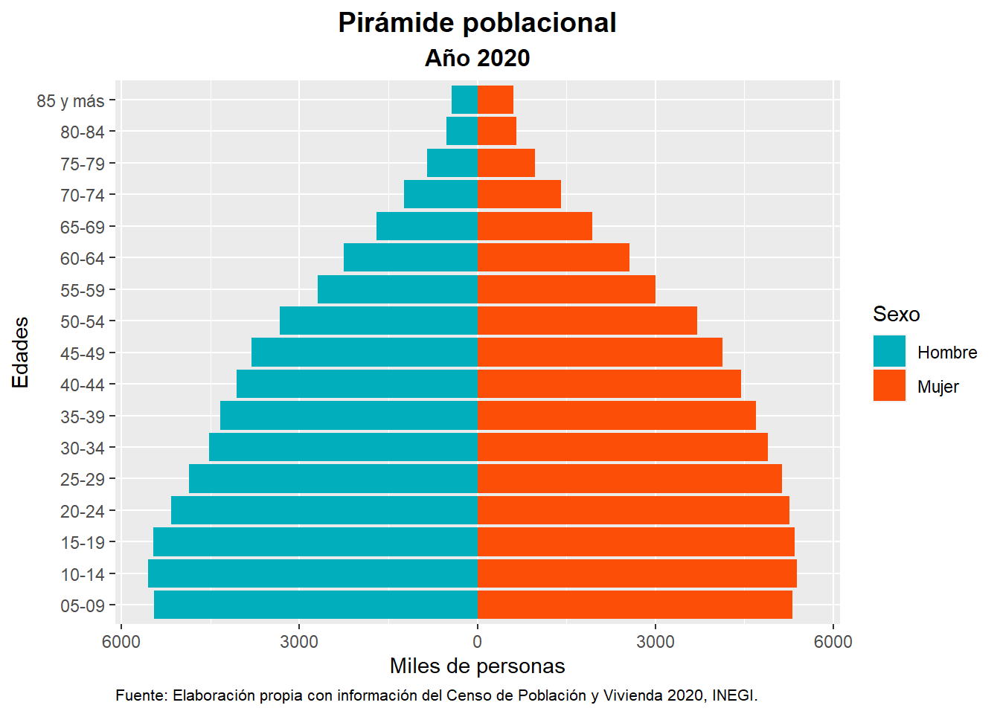
Sector Inmobiliario
En el sector inmobiliario, la estadística juega un papel crucial en la evaluación de propiedades, la identificación de tendencias del mercado y la toma de decisiones de inversión. Modelos de regresión múltiple se utilizan para analizar cómo factores como la ubicación, el tamaño y las características de una propiedad influyen en su valor de mercado. Modelos de series temporales y análisis de tendencia permiten prever cambios en los precios de los bienes raíces y la demanda a lo largo del tiempo. Las técnicas de análisis espacial, como el análisis de densidad de kernel, ayudan a identificar zonas de alta demanda y valorar el impacto de las características del vecindario en los precios de las propiedades. Además, el análisis de cluster permite segmentar el mercado en grupos con características similares, facilitando la identificación de nichos de mercado y oportunidades de inversión. Modelos predictivos, como los modelos de aprendizaje automático, pueden prever la evolución del mercado inmobiliario basándose en datos históricos y actuales, optimizando las estrategias de inversión y la planificación del desarrollo urbano. Estas técnicas estadísticas avanzadas proporcionan herramientas efectivas para la evaluación de riesgos, la maximización del retorno de inversión y la toma de decisiones estratégicas en el sector inmobiliario.
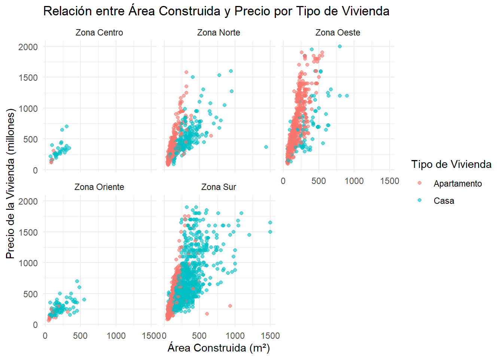
Banca y seguros
En banca y seguros, la estadística es esencial para la evaluación de riesgos, la fijación de precios y la gestión de carteras. Modelos de regresión logística y análisis de crédito se utilizan para evaluar la probabilidad de incumplimiento de los prestatarios y ajustar las tasas de interés en función del riesgo asociado. Los modelos de valor en riesgo (VaR) y modelos de simulación de Monte Carlo ayudan a medir y gestionar los riesgos financieros en carteras de inversión, permitiendo a las instituciones bancarias y aseguradoras anticipar pérdidas potenciales y protegerse contra eventos adversos. El credit score ) o puntaje crediticio es una herramienta clave para evaluar la solvencia de los prestatarios y ajustar las condiciones de crédito en consecuencia. La estadística y el aprendizaje automático juegan un papel crucial en la determinación y mejora de estos puntajes. Modelos de regresión logística y análisis de crédito han sido tradicionalmente utilizados para calcular el riesgo crediticio, evaluando variables como el historial de pagos, la cantidad de deuda y los ingresos del prestatario. Sin embargo, con el avance de la tecnología, técnicas más recientes como redes neuronales y máquinas de soporte vectorial (SVM) se están empleando para construir modelos predictivos más precisos. Estos enfoques utilizan grandes volúmenes de datos, incluidos datos alternativos como el comportamiento en redes sociales y el uso de teléfonos móviles, para mejorar la precisión en la predicción de incumplimientos. El análisis de clustering también se utiliza para segmentar a los prestatarios en grupos con características similares, permitiendo a las instituciones financieras personalizar sus estrategias de evaluación y gestión de riesgos. Además, algoritmos de aprendizaje automático, como árboles de decisión y ensemble methods (por ejemplo, random forests), están ganando popularidad por su capacidad para manejar datos complejos y no lineales, ofreciendo una evaluación más robusta
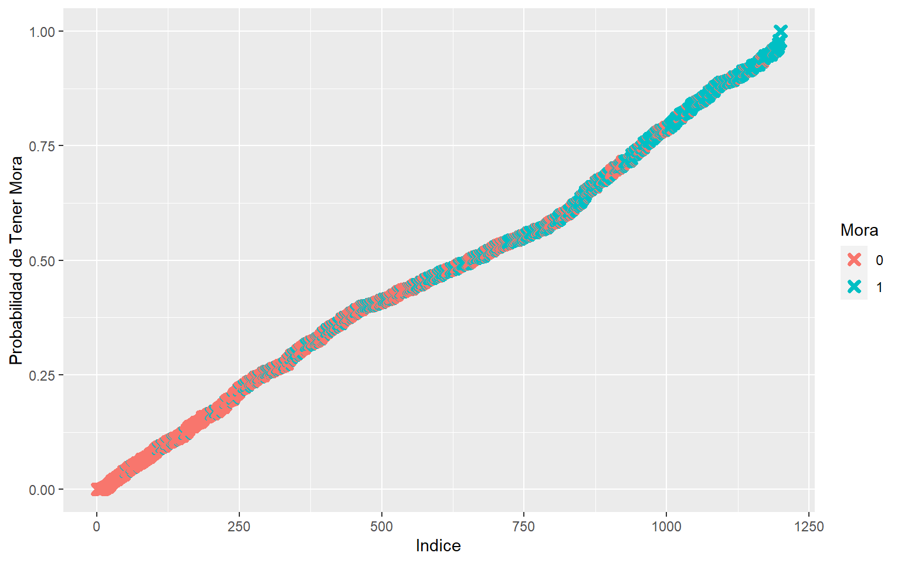
Importante
“Los campos o sectores donde se puede involucrar la estadística es muy amplia, y los modelos o métodos estadísticos en cada campo también, dependiendo el objetivo que se desea conseguir, por lo tanto lo que se ha descrito solo es referencial”
¿Ser estadístico es ser científico de datos?
Algunas personas se preguntan: “¿La ciencia de datos marca el fin de la estadística?” Esta cuestión ha generado debate, pero la realidad es que, sin importar la denominación—ciencia de datos, informática, análisis—la estadística sigue siendo un pilar fundamental en el análisis de datos.
A pesar de que en algunos programas de ciencia de datos la estadística tiene una presencia superficial, la labor del científico de datos no se reduce únicamente a aplicar métodos estadísticos. De hecho, el perfil de un científico de datos abarca diversas especializaciones que integran habilidades en estadística, matemáticas, informática, programación y conocimientos específicos del dominio de aplicación.
Desde una visión estricta, si ser científico de datos implicara un dominio absoluto de todas estas áreas, pocos podrían ostentar ese título. En cambio, una perspectiva más amplia reconoce que existen diferentes especializaciones dentro de la ciencia de datos, cada una con enfoques y niveles de formación distintos. En este sentido, un estadístico podría considerarse un científico de datos debido a su capacidad para analizar e interpretar datos. Sin embargo, una forma más precisa de expresarlo sería: “Soy un científico de datos con una perspectiva y formación en estadística” (Hyndman, 2014). Del mismo modo, otros científicos de datos tendrán enfoques distintos según su formación en ingeniería, computación o negocios.
En última instancia, la estadística sigue siendo la base sobre la que se construye la ciencia de datos, pues es la disciplina que permite extraer conocimiento a partir de la incertidumbre y transformar los datos en decisiones informadas.
En una cirugía de corazón, se requiere un equipo multidisciplinario: el cardiólogo evalúa y prepara al paciente, el cirujano cardiovascular realiza la operación, el anestesiólogo administra la anestesia y supervisa las funciones vitales, y el perfusionista maneja la circulación extracorpórea. Además, las enfermeras especializadas brindan cuidados durante y después del procedimiento, el radiólogo interpreta imágenes diagnósticas y, en algunos casos, un especialista en medicina interna gestiona otras condiciones del paciente.
Cada profesional cumple un rol específico dentro de su especialidad, asegurando el éxito de la cirugía. Como dice el refrán: “Zapatero a sus zapatos.” De la misma manera, en ciencia de datos debemos adoptar una perspectiva de equipo, reconociendo que se trata de una disciplina interdisciplinaria donde estadísticos, ingenieros, analistas y expertos en distintas áreas colaboran para extraer conocimiento de los datos.
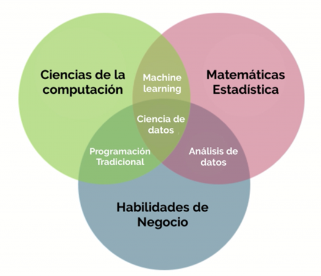
Ningún estadístico, informático o matemático puede abarcar por completo todo el espectro de la ciencia de datos que se muestra en Figura 1. Por ello, es fundamental especializarse en determinadas técnicas y problemas. Pensar que un médico debe saberlo todo es una locura, y lo mismo aplica para un científico de datos; no se puede esperar que domine a la perfección estadística, matemáticas, informática, programación y las múltiples disciplinas de aplicación. En cambio, la clave está en la colaboración entre profesionales con habilidades complementarias, cada uno consciente de los límites de su conocimiento y de a quién recurrir cuando sea necesario. No caigamos en el error de ser sectarios con nuestras disciplinas, descartando a quienes no comparten nuestra misma formación como si fueran herejes.
Esta diversidad de perfiles formativos lleva a que los profesionales se especialicen en áreas concretas, lo que a veces los conduce a aplicar sus habilidades en contextos que no siempre se ajustan a su formación o experiencia. La ciencia de datos es un campo tan amplio que podríamos compararlo con la medicina general: un profesional puede formarse en la base de todo, pero inevitablemente terminará inclinándose hacia una especialidad, dejando de lado otras áreas. Por eso, en lugar de intentar abarcarlo todo, es mucho más eficaz trabajar en equipo para abordar problemas complejos, aprovechando la complementariedad de conocimientos en lugar de asumir roles que no se alinean con nuestra preparación. Al final, todo está sincronizado hacia un mismo objetivo: extraer conocimiento valioso de los datos.
Ojo
“En empresas pequeñas, donde los volúmenes de datos son manejables, es común que un solo profesional asuma múltiples roles. Sin embargo, en grandes empresas, donde los proyectos son más complejos y especializados, esta práctica suele ser contraproducente. La falta de una definición clara de roles y expectativas puede derivar en ineficiencias, frustración y resultados subóptimos. Por eso, es importante reconocer que, en entornos grandes y complejos, el trabajo en equipo y la especialización son claves para el éxito.”.
El auge de la ciencia de datos ha generado el debate sobre si opaca o desplaza a la estadística. Sin embargo, más que perjudicarla, la impulsa a evolucionar. La estadística sigue siendo la base que sustenta el análisis, ayudando a validar hipótesis, interpretar patrones y garantizar la solidez de los resultados.
Si bien algunos perciben que la ciencia de datos resta protagonismo a la estadística, lo cierto es que ambas se complementan. La diferencia radica en el enfoque: mientras la ciencia de datos integra programación, algoritmos y big data, la estadística aporta el rigor metodológico para evitar errores e interpretar adecuadamente los resultados, y la teoría detrás de cada algoritmo.

Referencias
Hyndman, R. J. (2014). Am I a data scientist? En Rob J Hyndman. https://robjhyndman.com/hyndsight/am-i-a-data-scientist/index.html
Cómo citar
BibTeX
@online{ojeda_s.2024,
author = {Ojeda S., Jairon},
title = {La Estadística: Una ciencia detras de los datos},
date = {2024-07-15},
url = {https://jaironkevin.github.io/blog/1.html},
langid = {es}
}
Por favor, cita este trabajo como:
Ojeda S., J. (2024, July 15). La Estadística: Una ciencia detras de
los datos. https://jaironkevin.github.io/blog/1.html